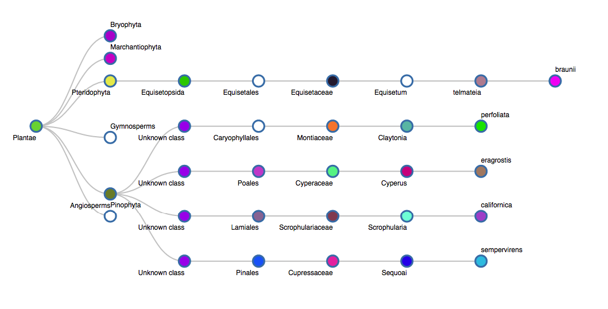

The natural world fascinates me. I spend much of my spare time hiking and observing plants over the seasons. This leads me to classifying and familiarizing myself with the habits of the things I often see. This project is a data driven app that graphs the classification.
 Github projectI post pictures of flowers and mushrooms at perobscurus